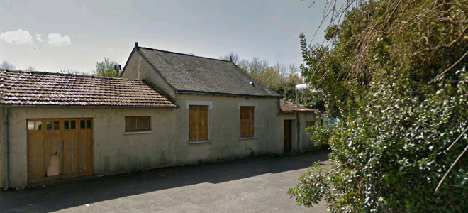

XXII LA MAISON DES GRANDS-PARENTS
Les mouches du cellier bourdonneront, l'anis
Etoilant ses parfums encombrera la sente,
La pompe grincera qu'un broc heurte et les nids
De guêpes sur le toit diront l'aïeule absente,
La maison vide, aux volets clos. Il n'y aura
Ni banc ensoleillé, ni tonnelles où pendent
Le vert cristal des grains, mais sur le seuil un drap
De velours noir et des pompons comme des glandes
D'argent. Il y aura... La pendule a sonné
Sempiternellement le carillon des heures.
Sur la table de bois les mains ont tant traîné
Qu'une ombre désormais incruste la demeure.
Un flacon de brouillard grise mieux que le vin.
Maison humble dressée au flanc de la lumière
Immobile, surgie éclair, et c'est en vain
Que les rochers du temps pour l'écraser s'épierrent-
Le compotier fleuri luit près du volet clos,
L'odeur des livres vieux emplit le meuble et l'ombre.
Dehors, l'automne brûle et triomphe. Les faux
Hivers pourront passer et les étés sans nombre,
Ils ne briseront pas la garde du pêcher
Inaltérable ni le chant de mes enfances...
Le visage qui monte où je vais me pencher
Du roi qui régit tout sut tourner les défenses.
Je conterai les dits du jardin hors du temps,
Le berceau de roses où tu veilles et chantes,
Et nul ne connaîtra si la voix qu'il entend
Est l'enfant que je fus ou celui qui me hante.
Michel Galiana (c) 1991
XXII THE GRANDPARENTS' HOUSE
There will be humming flies in the cellar and scents
Of anise, shining forth, will clutter up the path.
The pump, hit by a jug, will grate and the wasp nests
On the roof will proclaim that the old woman passed.
With its closed shutters the house will stay empty,
With no bench to bask on in the sun, no bowers
That crystal grapes adorn... Only a canopy
Of black velvet, bobbles looking like sick flowers
Of silver. There will be... Hark! The clock did just ring,
Endlessly, stammering its stubborn chimes and hours.
On the wooden table, for so long lingering,
Hands have left a shadow that pervaded the house.
A flask of mist is still headier than is wine.
Humble dwelling that stood, that night, suddenly lit,
Motionless, by a sparkling flash. It is in vain
That the rocks of the years will crumble to crush it.
The flowery fruit dish shines near the closed shutters,
The smell of the old books fills the shade and the press.
Outside burning autumn triumphs. Now fraud winters
Will pass and pass along, and summers, numberless,
They will not prevent me from watching steadfastly
Over the peach tree and the song of my young years...
The face has arisen - which I'll behold closely -
Of the King who rules all and does not yield to tears.
But I shall tell the tales of the timeless garden,
The rosebed where you watch and hum your melody.
Let them wonder if the voice to which they listen
Is the child's I was or the One's who lives in me!
Transl. Christian Souchon 01.01.2004 (c) (r) All rights reserved
Le sujet du poème est le décès de la grand-mère maternelle de l'auteur, le 15 mars 1953 à Nantes. La quatrième strophe évoque la maison violemment éclairée par les phares de la voiture qui avait conduit l'auteur et sa famile de Paris à Nantes où ils arrivèrent en plein milieu de la nuit. (Cf.La maison du matin)
This poem is relating to the death of the author's grandmother, on March 15, 1953 in Nantes. The fourth stanza evokes the house violently lit by the headlights of the car which brought the author and his family from Paris to Nantes where they arrived in the middle of the night. (Cf.La maison du matin)